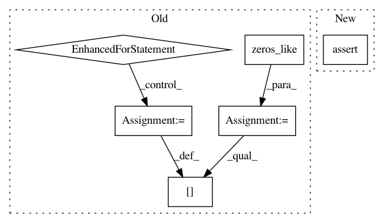

d4c0d404adac1a135f1aa2114d156fb8b3395265,tests/test_special_orthogonal_group.py,TestSpecialOrthogonalGroupMethods,test_regularize_vectorization,#TestSpecialOrthogonalGroupMethods#,303
Before Change
gs.allclose(
result.shape, (n_samples, n, n)))
expected = gs.zeros_like(rot_vecs)
for i in range(n_samples):
expected[i] = group.regularize(rot_vecs[i])
self.assertTrue(gs.allclose(expected, result))
@geomstats.tests.np_only
def test_matrix_from_rotation_vector(self):
After Change
self.assertAllClose(
gs.shape(result), (n_samples, group.dimension))
if point_type == "matrix":
self.assertAllClose(
gs.shape(result), (n_samples, n, n))
def test_matrix_from_rotation_vector(self):
n = 3
group = self.so[n]
In pattern: SUPERPATTERN
Frequency: 3
Non-data size: 6
Instances
Project Name: geomstats/geomstats
Commit Name: d4c0d404adac1a135f1aa2114d156fb8b3395265
Time: 2018-12-26
Author: ninamio78@gmail.com
File Name: tests/test_special_orthogonal_group.py
Class Name: TestSpecialOrthogonalGroupMethods
Method Name: test_regularize_vectorization
Project Name: fgnt/pb_bss
Commit Name: 282be79fcc7b0d539af702c5a243a45eb6dd86ed
Time: 2019-07-18
Author: cbj@mail.uni-paderborn.de
File Name: pb_bss/permutation_alignment.py
Class Name: DHTVPermutationAlignment
Method Name: apply_mapping
Project Name: geomstats/geomstats
Commit Name: 8917a9d9c025613272544be55580d26f58dffe6a
Time: 2018-03-16
Author: ninamio78@gmail.com
File Name: geomstats/special_orthogonal_group.py
Class Name:
Method Name: closest_rotation_matrix